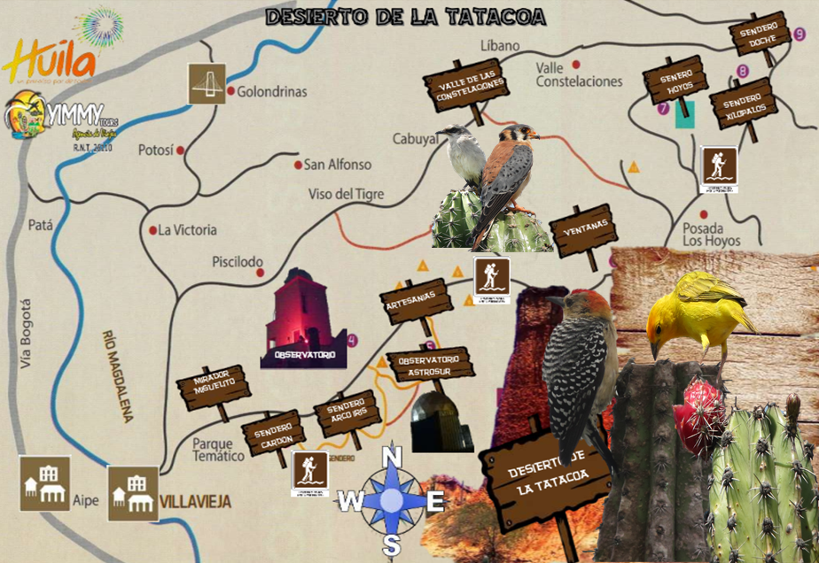

Tours al desierto | ¿Qué hacer en el desierto?
En el Desierto de la Tatacoa, en Colombia, puedes hacer actividades como observar las estrellas, recorrer el desierto, visitar el Ovni Puerto, y más
-
Observar las estrellas.
- El Desierto de la Tatacoa es un lugar ideal para los amantes de la astronomía.
- Se pueden observar las 88 constelaciones.
- El Observatorio Astronómico tiene dos telescopios de investigación científica.
- Se puede recorrer el desierto en bicicleta, a caballo, o en cuatrimoto.
- Se puede recorrer el Desierto Rojo o el Desierto Gris.
- Se pueden hacer rutas en todoterreno.
- El Ovni Puerto es un lugar turístico del Desierto de la Tatacoa.
- Se pueden bañar en piscinas naturales en medio del desierto.
- Se puede hospedarse en hoteles u hostales dentro del desierto o en Villavieja.
Recorrer el desierto.
Visitar el Ovni Puerto.
Bañarse en piscinas